How to install CloudArray
Overview
CloudArray is a fully integrated appliance which uses object storage (raw unorganised storage on a disk) and exposes it as a network share. It presents itself as file storage to users but uses a mix of object storage and metadata behind the scenes.
How does CloudArray work
As CloudArray is a fully integrated appliance, you don't have to spend money and resources managing operating systems for the solutions. It uses a combination of object storage and a local cache reserve to provide unlimited storage with near local storage performance, using the cache to store frequently used files locally, while asynchronously replicating data to UKCloud's Cloud Storage platform. CloudArray also supports Amazon's REST S3 API to expand on-premises SANs and NAS solutions with on-demand elastic cloud capacity.
Tip
If you do not need the features of CloudArray such as deduplication and location caching, or do not require a fully-integrated cloud gateway appliance, you may want to consider the GeoDrive Client 2.0 as an alternative.
Use cases
Potential use cases for CloudArray include:
Storage on mass using UKCloud Cloud Storage
Move infrequently accessed data to low-cost cloud tiers (typically object storage is much slower compared to block or file storage as it functions on a request basis)
Assurance that data synchronised to the cloud is encrypted both in transit and at rest
System requirements
Supported hypervisors
CloudArray supports the following hypervisors:
VMware vSphere 5.5 (ESXi) or higher
Microsoft Windows Server 2012 R2 with Hyper-V
[!NOTE] The hypervisor must support 64 bit Linux OS guest operating systems.
RAM, CPU and disk requirements
To run CloudArray Virtual Edition you must have the following minimum resources:
60 GB of disk space
1 virtual processor assigned to the CloudArray VE (two virtual processors is recommended)
8 GB of RAM for the 3 TB base model
For specific details about memory requirements, see EMC CloudArray Best Practices.
Supported host operating systems
CloudArray supports the following operating systems:
Mac OS X
OpenSolaris 2009.06
Red Hat Linux: 4.0 and higher
SUSE Linux: 10, 11
VMware ESX or ESXi
Windows: XP, Vista, 7, 8, Server 2003, 2008, 2012
Supported web browsers
CloudArray supports the browsers:
Google Chrome v49 or higher
Microsoft Edge v25 or higher
Internet Explorer v11 or higher
Mozilla Firefox v45 or higher
Safari for Mac v6.1.6 or higher
Network port requirements
CloudArray allows network traffic on the following TCP/IP ports:
80 (HTTP)
111 (NFS Portmapper TCP/UDP)
137, 138, 139 (CIFS)
443 (HTTPS)
445 (CIFS)
System requirements:
662 (NFS Status TCP/UDP)
875 (NFS rquotad TCP/UDP)
892 (NFS mountd TCP/UDP)
2049 (NFS nfsd TCP/UDP)
3260 (iSCSI)
8080 (HTTP)
32803 (NFS nlockmgr TCP)
41022 (EMC Support)
Memory sharing
Memory for a CloudArray virtual machine must be provisioned for its exclusive use.
CloudArray is a memory-intensive application. Substantial performance degradation is likely if other virtual machines share the memory allocated to CloudArray.
Obtaining a CloudArray license
If you require a CloudArray license key, UKCloud will contact Dell EMC on your behalf. Contact your Technical Account Manager (TAM) for further details.
Installing CloudArray Virtual Edition
The steps for installing CloudArray depend on your hypervisor:
Installing CloudArray on VMware vSphere
To install CloudArray on VMware:
Login to the EMC CloudArray portal.
Click Downloads & Documents.
From the list in My Downloads, select download, and extract the CloudArray package.
Import the OVF file into your hypervisor.
[!NOTE] The VM is configured for two networks but only one is required. However, we strongly recommend that you connect two interfaces. Use one interface for cloud traffic and the second for iSCSI/CIFS/NFS and management traffic.
For VMware ESX or ESXi complete the following steps, otherwise proceed to the next numbered step.
a. Open the vSphere Client and log in using your credentials.
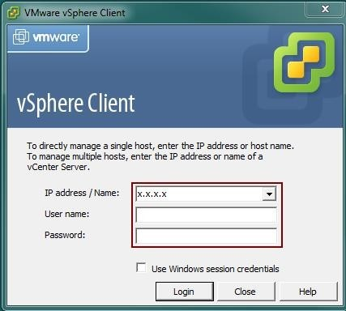
b. Once the client opens, select File > Import OVF Template
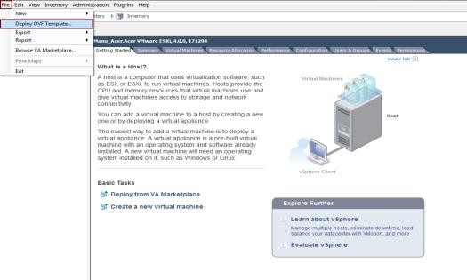
c. Browse to the folder where you extracted the contents of the downloaded CloudArray zip file and choose the
.ovffile. Then click Next.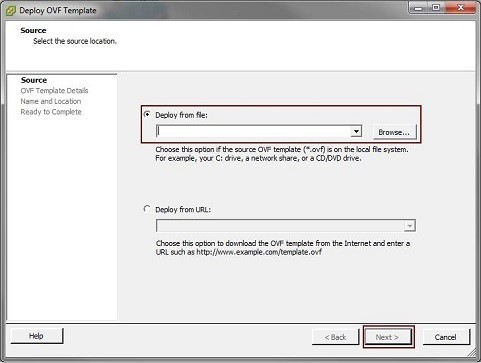
d. Enter a name for the virtual machine or leave it unchanged, then click Next.
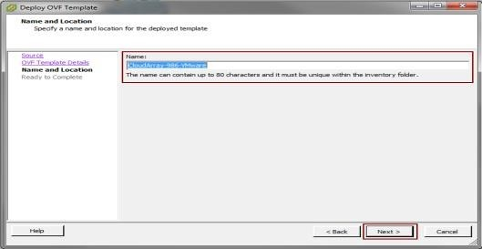
e. Review the summary screen and click Finish to begin the importing process.
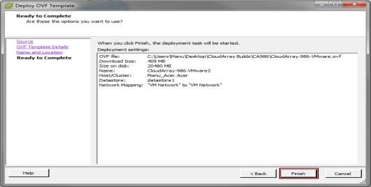
f. A success message displays upon completion.
Power on the CloudArray virtual machine.
Go to Configuring CloudArray.
Installing CloudArray on Microsoft Hyper-V
To install CloudArray on Microsoft Hyper-V:
Log in to the EMC CloudArray portal.
Click Downloads & Documents.
From the list in My Downloads, select download, and extract the CloudArray package.
Download and extract the
CloudArray.zipfile to a location of your choice.[!NOTE] We recommend that you extract the file to the machine running the graphical user interface for the hypervisor on which you'll be installing CloudArray as this will minimize the VM import time.
Import the VM into your hypervisor.
[!NOTE] The VM is configured for two networks but only one is required. However, we strongly recommend that you connect two interfaces. Use one interface for cloud traffic and the second for iSCSI/CIFS/NFS and management traffic.
Open Hyper-V Manager on the windows host where you plan to deploy the CloudArray VM.
Select Action > Import Virtual Machine.
Complete the following fields.
a. Browse to the root folder where you extracted the VM files.
b. Select the "Copy the virtual machine" radio button.
c. Check the "Duplicate all files" check box if you plan to deploy this VM to multiple hypervisors.
Click Import.
The import process begins and might take some time to complete. A status bar indicates the progress.
After the VM is imported, start the virtual machine.
Go to Configuring CloudArray.
Configuring CloudArray
You have two options to configure CloudArray:
Configuring CloudArray using the CloudArray Appliance console
Starting the console
To start the CloudArray Appliance console:
You can use Hypervisor to access the CloudArray Appliance console.
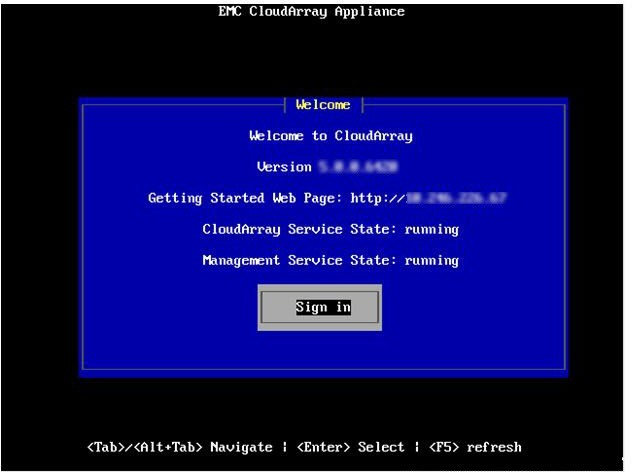
Click Sign in and enter the following credentials:
Username: admin
Password: <admin_password>
Upon first login, you are prompted to change the password.
[!NOTE] CloudArray attempts to find a DHCP server the first time it boots. If not successful, you'll see Getting Started Web Page: http://No IP assigned. In that case, refer to Configuring the network to set an initial IP address. You can then use the Network Tools feature in the CloudArray GUI to finish configuring the adapters.
Choose the desired operation from the CloudArray Appliance console display. The CloudArray Appliance console enables you to set the network configuration, manage CloudArray services, restart the appliance and perform diagnostic tests.
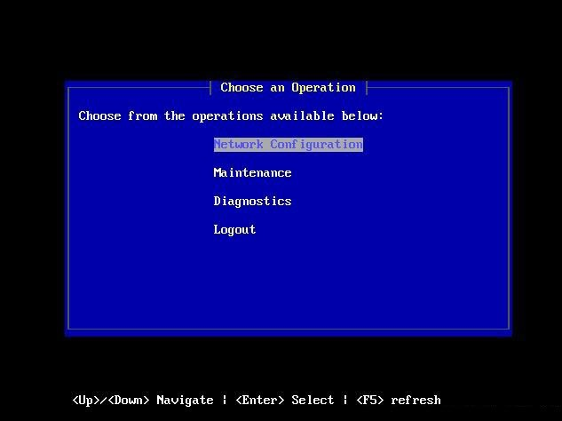
[!NOTE] You only need to configure one Ethernet adapter in this console. Use the more flexible Network Tools feature in the CloudArray web GUI to finish configuring your network adapters, including bonding if desired. See the network tools section in the EMC CloudArray Administrator Guide for more information.
Configuring the network
To set network related information for CloudArray:
From the CloudArray Appliance console main menu, select Network Configuration. The Configure Networking panel displays.
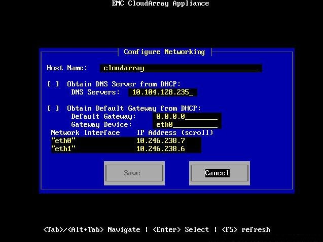
If desired, change the host name.
If you plan to use static IP addresses with CloudArray, provide the IP address and related information for eth0:
a. DNS Servers
b. Default Gateway.
c. Gateway Device: Enter a device name, for example, eth0.
[!NOTE] In Microsoft Hyper-V, the entries in the device names list may appear as
seth0andseth1, instead ofeth0andeth1. If that is the case, please enter the device name aseth0.d. To set the IP address and subnet mask of a device, tab to the list of devices, use the arrow keys to highlight the desired device (pink) and press Enter. Choose Save.
From the CloudArray Appliance console main menu, select Diagnostics. The Diagnostics panel displays.
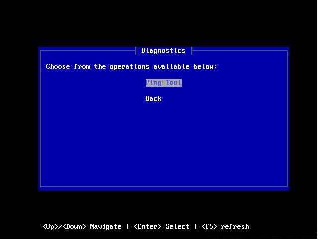
Choose Save again from the main menu.
You will see the Restarting Network pop-up. This operation can take a few minutes to complete.
[!NOTE] If you changed the host name, you'll be prompted to reboot the VM for the change to take effect. You can avoid rebooting the appliance by changing the host name using the Network Tools feature of the Web GUI.
Configuring maintenance operations
To perform maintenance operations:
From the CloudArray Appliance console main menu, select Maintenance. The Maintenance panel displays.
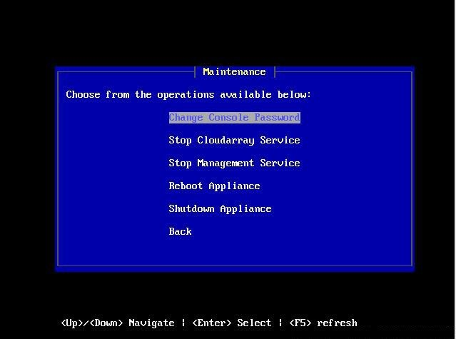
[!NOTE] The Cloudarray Service and Management Service menu items toggle what they display: Stop or Start, depending on whether that service is currently running.
Choose from the following operations:
a. Change Console Password: Enables you to reset your password.
b. Stop CloudArray Service or Start CloudArray Service: Enables you to stop or start the CloudArray service.
c. Stop Management Service or Start Management Service: Enables you to stop or start the management service.
d. Reboot Appliance: Enables you to reboot the CloudArray.
e. Shutdown Appliance: Enables you to shut down the CloudArray.
Verifying network connectivity
To verify network connectivity:
From the CloudArray Appliance console main menu, select Diagnostics. The Diagnostics panel displays.

Select Ping Tool to verify network connectivity.
Configuring CloudArray using the web browser interface
Connecting to the web browser interface
CloudArray is configurable using a browser. To access this interface, in your browser, enter the IP address of the console shown on the start page of your management console.
[!NOTE] Newer versions (v7.X.X.X.X) require a secure connection to the CloudArray interface when accessed through a web browser. To do this, connect to the IP address with an HTTPS login.
If your browser shows an error, follow the steps below to connect to the CloudArray web interface:
The following image shows an example of the error message as seen in a Microsoft Edge browser but will be very similar in every browser.
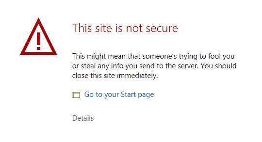
Click Details.
Click Go on to the webpage (Not recommended).
Configuring CloudArray using the web browser
To configure CloudArray:
Once connected to CloudArray using a web browser, you have two options:
Setup - to setup and configure a new installation of CloudArray.
Restore - to restore a backup configuration of a previous CloudArray Installation.
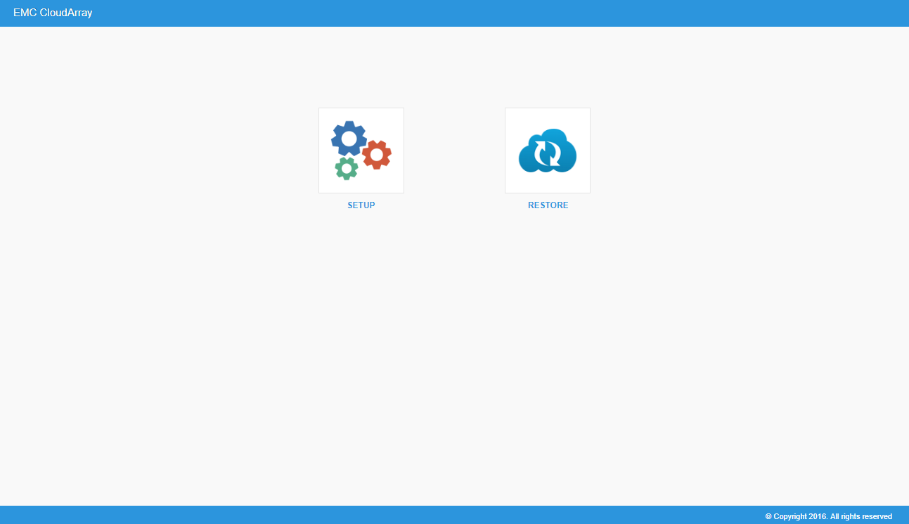
This article shows you how to configure a new installation of CloudArray through a web browser, so click Setup.
You'll be presented with a wizard to set up EMC CloudArray.
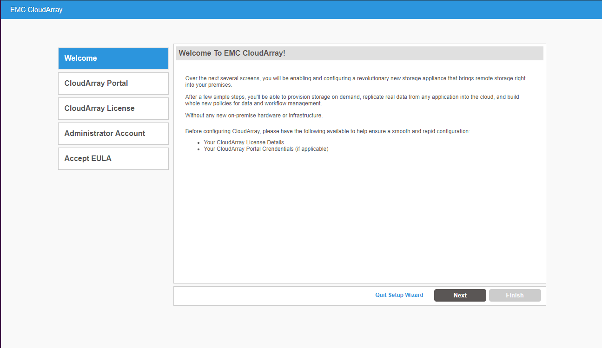
Click Next.
Ensure Enable CloudArray Portal is selected and click Next
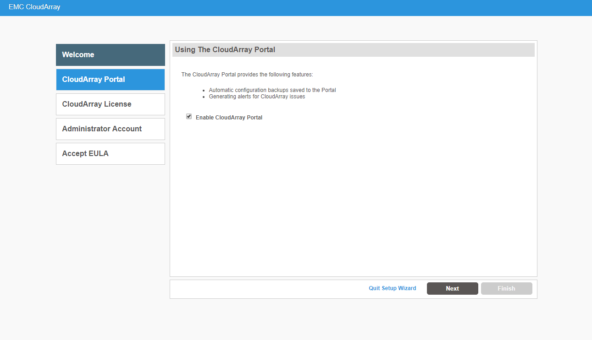
Enter your login credentials, which will be the same email address and password you used to log in to the CloudArray portal to obtain the
.ovafile for installation.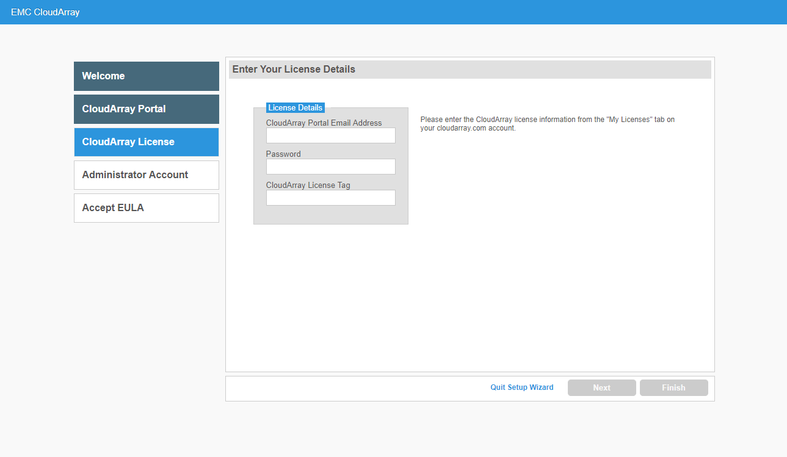
[!TIP] To obtain the CloudArray License Tag, log into the CloudArray portal by going to the link
https://www.cloudarray.comand entering in your login credentials. The CloudArray license tag will be shown in the Recently added Licenses section.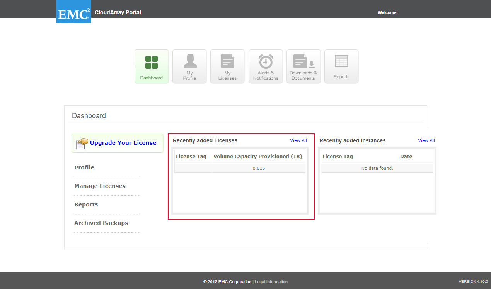
When you've entered your login credentials and CloudArray License Tag, click Next.
Create an administrator account to use for configuring the settings in CloudArray.
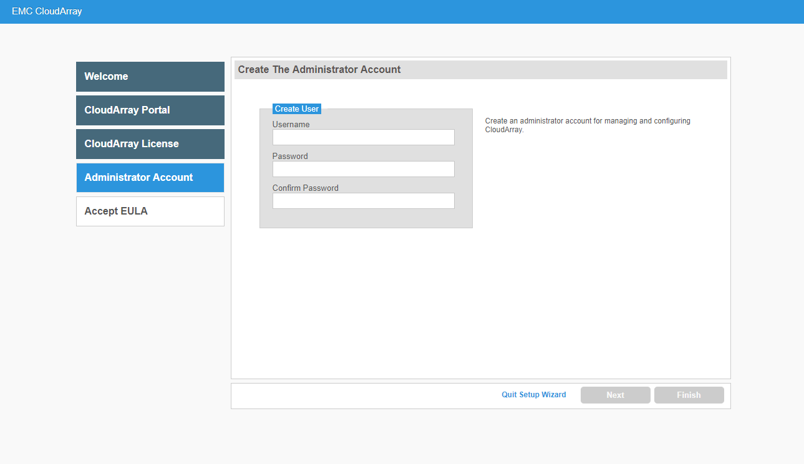
Enter in your desired username and password with the password confirmation and then click Next.
Read the End-User License Agreement by scrolling to the bottom of the document (required), tick the box to accept the EULA and click Finish.
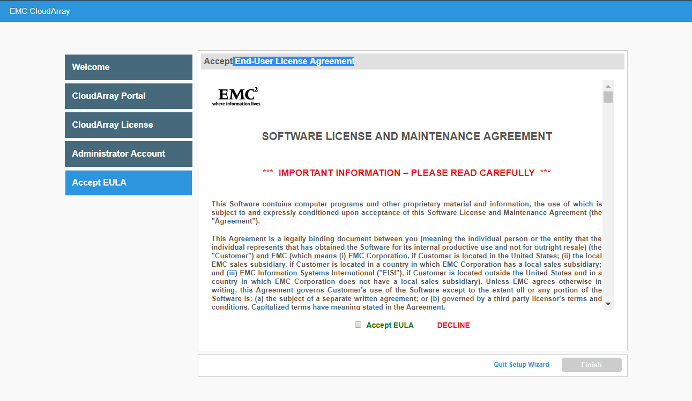
When you click Finish, you'll be taken to the login page.
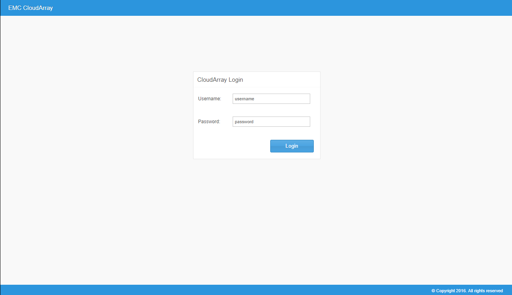
Enter the administrator log in credentials you created earlier in step 6 and click Login.
You'll be presented with the initial dashboard of CloudArray, you have two options:
Configuration Wizard
User Interface
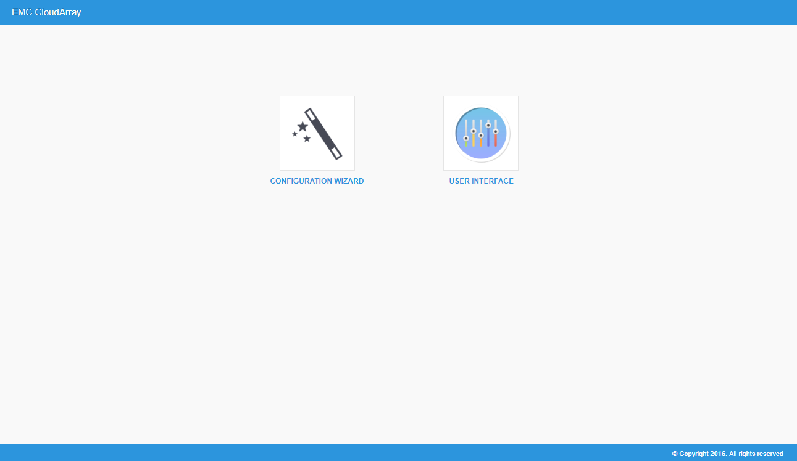
In this article we'll be going through a new configuration using the configuration wizard, so click Configuration Wizard.
Select your cloud provider:
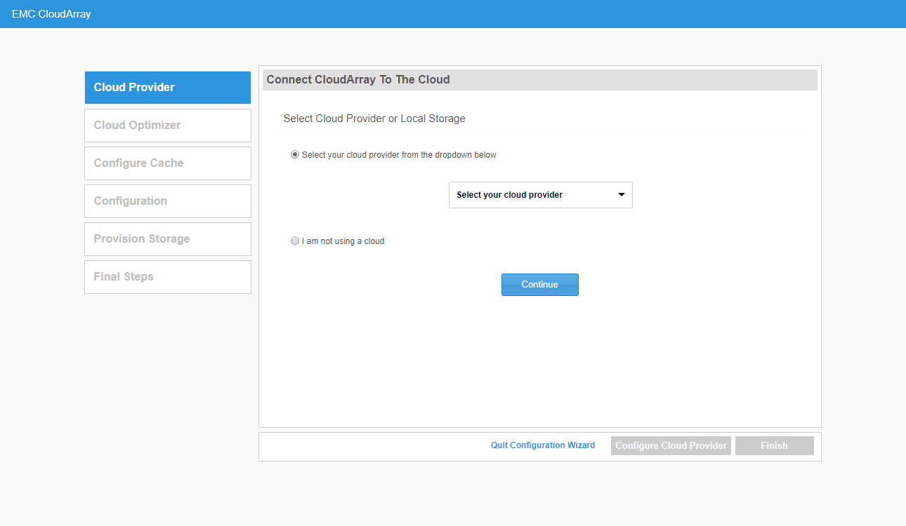
And local storage cache:
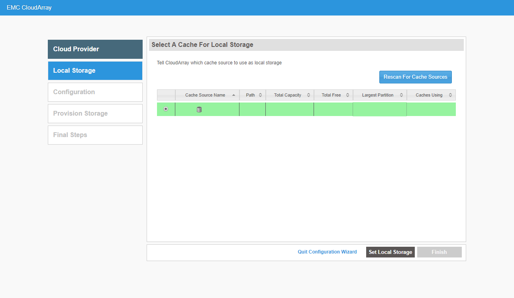
On the Configuration page, from the dropdown menu, select ECS.
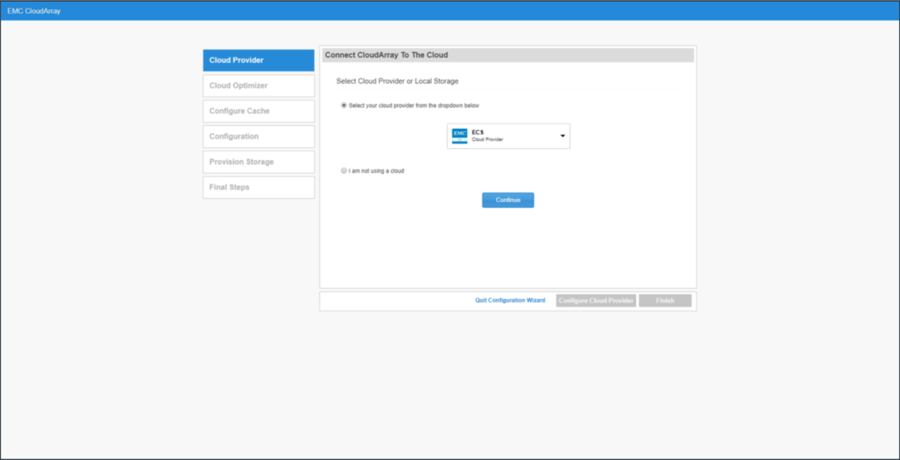
On the Accept EULA page, select Accept EULA to accept the end-user license agreement, then click Finish.
Click Configuration Wizard to configure your connection to Cloud Storage.
Fill in your Cloud Storage credentials. You can get these from the Storage section of the UKCloud Portal. The Token value is a combination of the subtenant ID (bucket name) and the user ID values from the Portal, joined by a forward slash (
*/*):subtenant_id / user_id.On the Cloud Optimizer page, configure at least one provisioning policy and then click Next.
A provisioning policy connects a cloud provider and a cache.
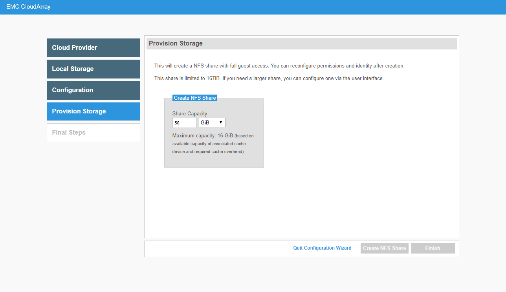
On the Configure Cache page, configure the cache and connection speed.
Click Create CIFS Share.
On the Final Steps page, click Finish.
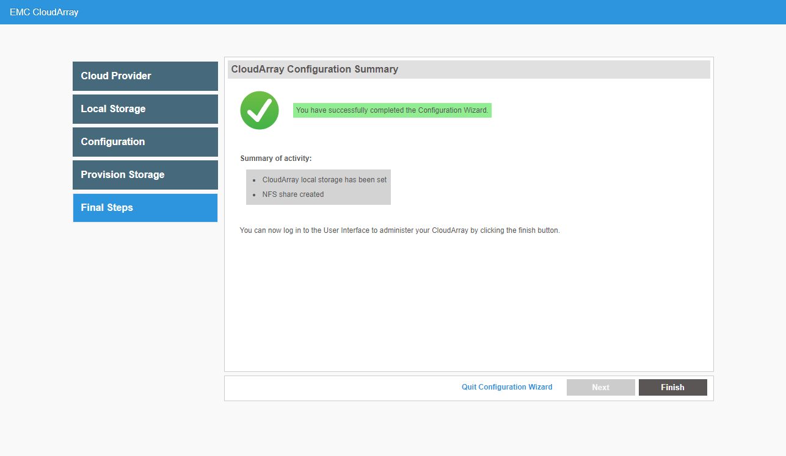
About the Dashboard
The CloudArray interface is comprised of the following major elements:
Main menu
The EMC CloudArray main menu is on the left side of the screen. Click menu items to move directly to the corresponding top-level panel and view related sub-menu items.
[!NOTE] If you reduce the window size, the main menu moves to the top of the screen.
Status indicators
The status indicators at the top of the screen report the status of CloudArray components. Hover over the green or red indicator light to see more information about the status. Click the status indicators to move directly to the corresponding top-level panel for each item.
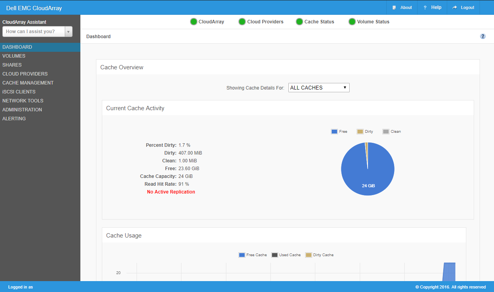
Troubleshooting
Verifying Cloud Storage credentials and connectivity
Complete the following steps to verify your Cloud Storage credentials and connectivity using S3 Browser:
From the Tools > Options > Connection tab:
a. Select the appropriate HTTPS setting.
b. Do not use the proxy settings.
[!NOTE] Refer to How to use file browsers with Cloud Storage for connectivity details.
Add a new account or modify an existing one.
a. Verify the AccessKey and Shared Secret.
b. Set storage type to S3 Compatible Storage.
c. Enter the REST Endpoint IP Address with Port.
If there are no buckets in the bucket list page they may not have been created yet. Create a bucket as follows:
a. Make sure there are no errors in the log details.
b. Create a bucket.
c. Upload a file to the bucket.
d. Delete the file and the bucket.
If you are successful at this point, then CloudArray should be able to connect.
Next steps
This guide has shown you how to install and configure CloudArray for use with Cloud Storage. For more information about how to use the service, see the following articles:
How to create a new Cloud Storage user in the UKCloud Portal
Cloud Storage Gateways
Feedback
If you find an issue with this article, click Improve this Doc to suggest a change. If you have an idea for how we could improve any of our services, visit the Ideas section of the UKCloud Community.